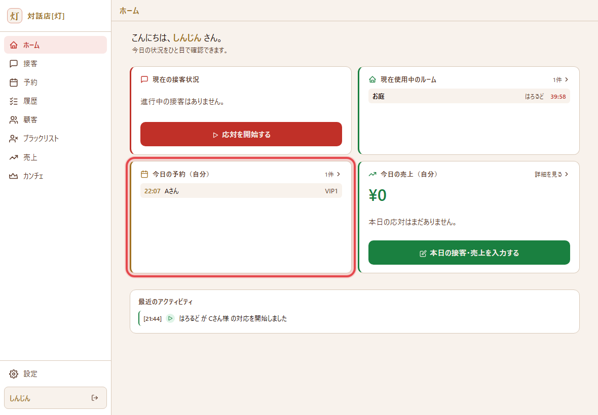
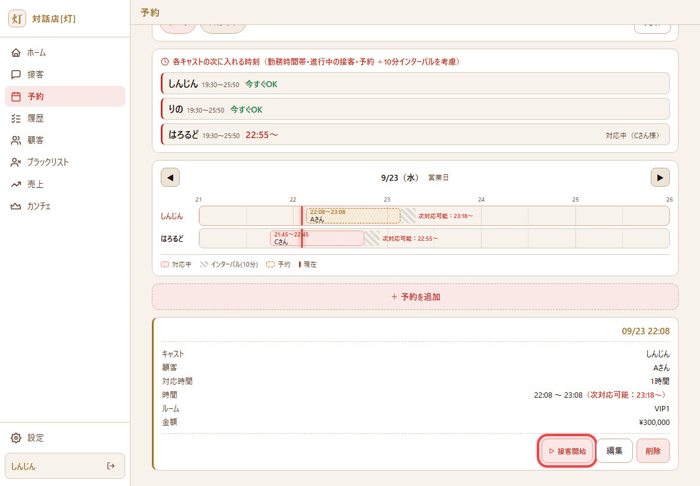
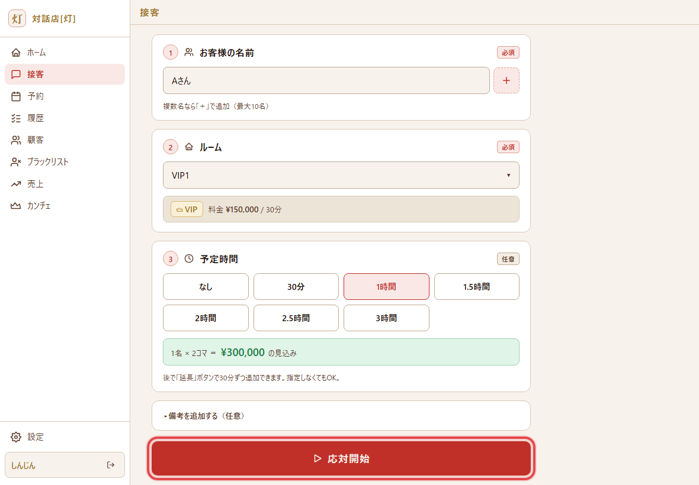
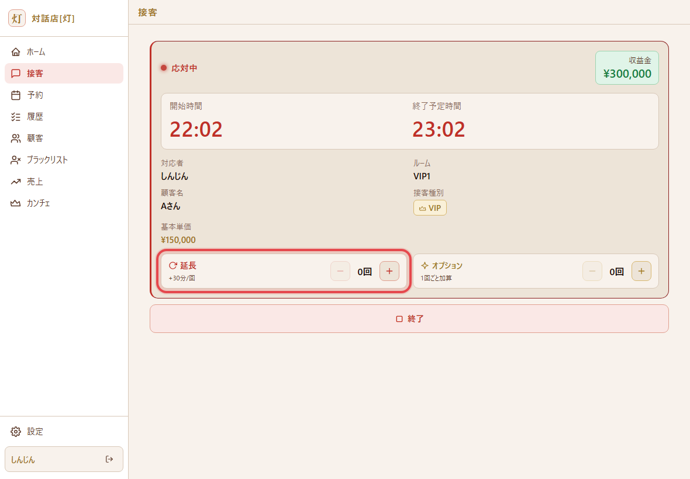
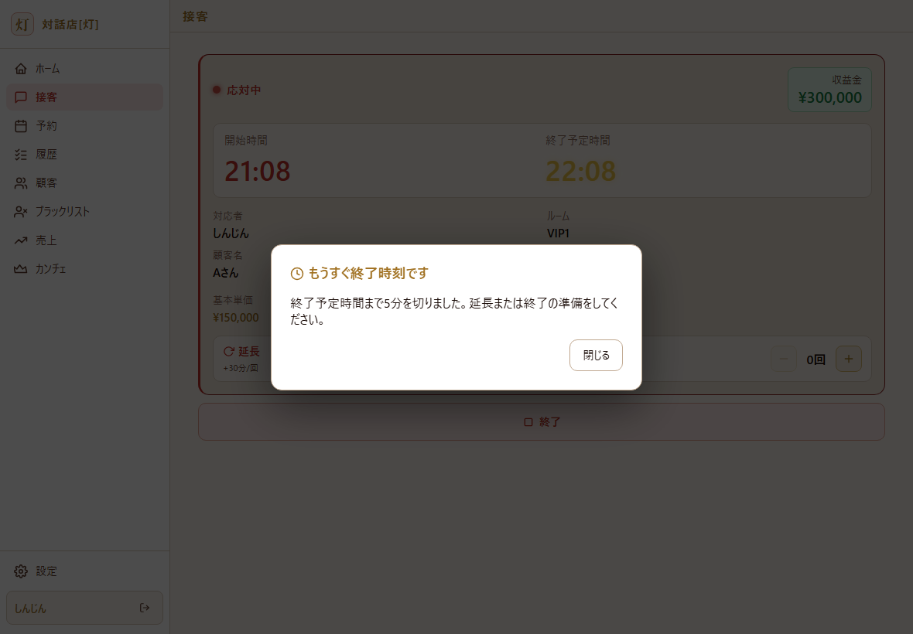
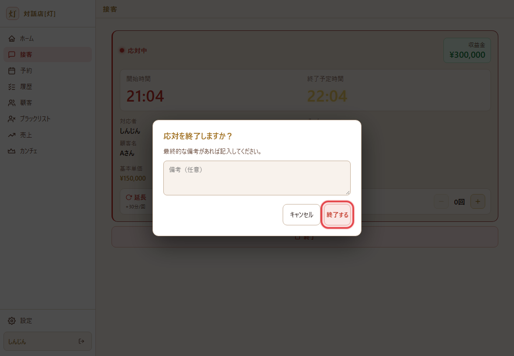
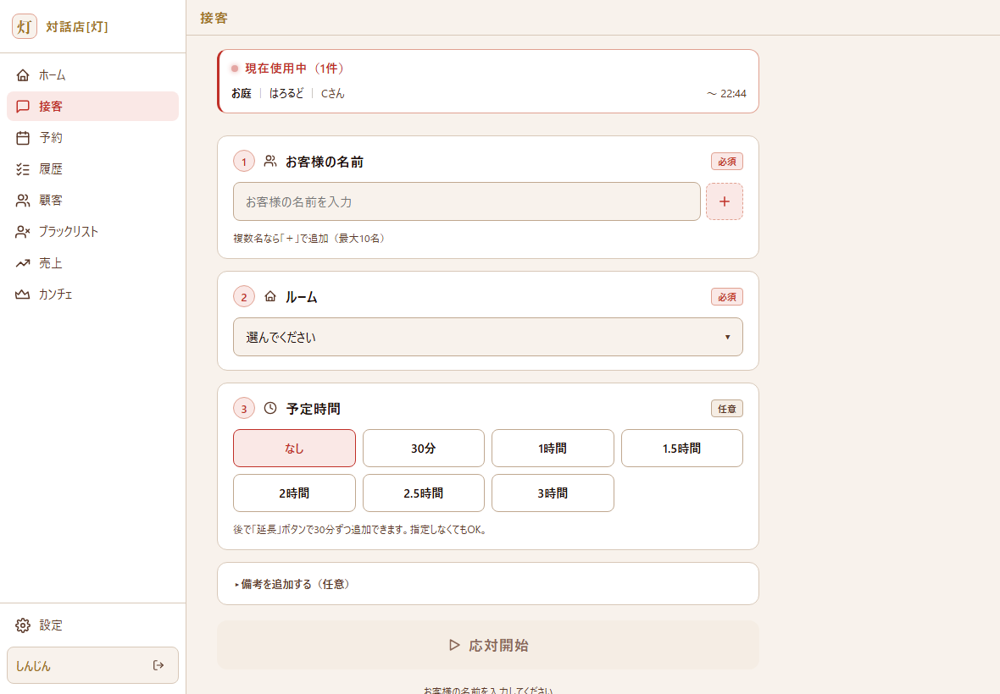

はじめての接客で迷わないための、流れとアプリの使い方をまとめました。まずはここだけ読めばOKです。
アプリで「ルーム」を選ぶとき、個室を選ぶと VIP、お庭を選ぶと通常の料金で自動計算されます。
基本は はろるど・りの の接客に同行して、流れを見て覚えます。
受付（みかみん）へ：2人の指名が入ったら、お客様に「新人の同行OKか」を確認してください。OKなら同行してもらいます。料金は1人分でOK（新人ちゃんの分はお店側で出します）。
フリーのお客様は新人ちゃんに振ります。やることはシンプル。下の「1回の接客の流れ」どおりに進めればOKです。
ひとりで抱えなくて大丈夫。CWLS か Discord の雑談ch で気軽に聞いてね。
画面はサンプルです（名前・部屋名・金額は見本）。赤い枠が押すところ／見るところです。
ログインすると最初にホームが開きます。「今日の予約（自分）」に、割り振られたお客様・時刻・お部屋が出ます。タップすると予約タブへ移動します。

予約タブで、自分の予約カードの 接客開始 を押します。PT を組んでお部屋にご案内してから 押してください（押した時刻から時間が数えられます）。

お客様の名前・ルーム・予定時間は予約から自動で入っています。合っていれば一番下の 応対開始 を押すだけ。

「応対中」になり、開始時間と 終了予定時間 が大きく出ます。延長になったら 延長の ＋ を押すと、終了予定が30分のび、料金も自動で足されます。間違えて押したら − で戻せます。

終了予定の5分前になると、アプリがお知らせを出します。これが出たら お客様に延長のご希望を聞きましょう。延長なら手順4の ＋、なければそのままお会計・お見送りの準備へ。

応対中画面の下の 終了 を押すと確認が出ます。気になったことがあれば備考にひとこと残して、終了する。そのあとお見送りです。

終了すると、接客タブは次の接客を始める空のフォームに戻ります。これで記録は完了。売上は自動で入るので、ほかに入力することはありません。

CWLS か Discord の雑談ch で聞いてね。こんなときも遠慮なく：